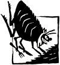
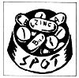

Pet Concerns
If you've been around dogs for any length of time, you already know full well what a hot spot is. Other names for this common summertime evilness include acute moist dermatitis, moist eczema and pyrotraumatic dermatitis. No matter what you call it, the look is the same: a raw and ugly spot denuded of hair. Typically the site of the itch appears overnight, a pinprick of extreme bother to Pooch. He'll gnaw and dig at the irritation, if you let him, until that small spot has grown into a painful and unsightly lesion.
Obviously, a hot spot is not something you can wait on and watch "to see if it goes away on its own." Prompt treatment is essential and is generally rapidly effective.
The usual approach is to administer one of the cortisone products, either via injection or topically (or both). Cortisone provides immediate relief, but can also produce a number of undesirable side effects.
Treatment is often most effective when the area is first clipped free of hair and washed clean of debris and other irritants. A whole body bath may be necessary to restore the skin and coat to health . . . and especially to get rid of any fleas, which are the most likely cause of the whole mess. (See issue 106's "Pet Concerns" for information on natural flea control.)
Often, a topical astringent such as aloe vera or a weak solution of tannic acid and salicylic acid seems to ease the itch and pain. Some critters may be so incensed with the itch, however, they'll require tranquilization or mechanical restraint to prevent selfmutilation. Antibiotics are often indicated to prevent secondary infection of the exposed dermis.
In my opinion, hot spots are a disease that needs to be evaluated and treated ASAP by a veterinarian. There are at least three reasons for this.
First, you won't (and, in fact, shouldn't) have the arsenal of cures in your medicine chest that your vet has. Second, there are a few dermatitis problems that at first glance look very much like the garden variety hot spot. Only a trained eye can discern the difference and detect mange, hormonal imbalance, nutritional deficiency or any of several other possibilities. Rely on a practicing expert, your veterinarian, to give you an accurate diagnosis-is it a hot spot, or something else that requires entirely different treatment?
The third reason to see a vet when of Blue develops a hot spot may well be the most important to you in the long run: You'll have a chance to find out how holistically oriented your vet is. Quicktreating hot spots can mean easy cash in any practitioner's coffers. On the other hand, if your vet is interested in your pet's total, long-term health, he or she will recognize the hot spot as obvious evidence of some internal imbalance in the animal's wellbeing.
My approach to hot spots is to cure the itch first (gotta get rid of the itch, no way around this), then look for a lifestyle for owner and Pet that'll keep disease at bay.
Preventing Hot Spots
Exercise: Exercise for hot spots? You bet! Remember: The primary treatment for hot spots is cortisone. And what's a natural producer of bodily cortisones? Why, exercise, of course.
Keep those itches to a minimum. Give Pooch every chance possible to produce nature's cortisones. Exercise your pet daily. (I don't consider shoving a dog out the door twice a day to "take care of business" to be adequate exercise. A 20-minute daily outdoor romp is about the least you can do. Won't hurt your own health one bit, either.)
Nutrition: Healthy skin requires good nutrition. Hot spots, on the other hand, thrive on unhealthy skin. All essential nutrients have a hand in creating healthy skin, but several are especially important. The B vitamins and vitamin A are crucial. Zinc also plays a major role. Also, dogs have an absolute need for linoleic acid, one of the fatty acids commonly found in vegetable oils such as safflower oil.
You can't go wrong by giving Pooch a daily dose of a good multivitamin and mineral supplement that contains linoleic acid and zinc. You can make a home-brew supplement that will provide most if not all the necessaries by mixing together about two tablespoonfuls of diced liver, a teaspoonful of safflower oil and a ground-up 10-mg zinc gluconate tablet. Feed one portion of this mixture daily for each 20 to 30 pounds of dog.
Relaxation: Unlike their human counterparts, dogs don't usually need to be taught relaxation techniques. Watch Pooch sprawl out on his favorite rug and you'll know what I mean. We should be the ones to learn how to relax and meditate, taking our cues from the experts: animals.
But Pooch also knows instinctively when there is trouble or stress within his own human family. The stress could possibly set off a hot spot. The best advice I can give here is to get to the root of the stress, and give Pooch a relaxed atmosphere . . . for his skin's sake.
Love: Love is the great calmer, the perfect reliever of skin tension. Give Pooch all the loving, petting and hugging you can, and watch his skin literally gleam with the attention.
So there you have it-hot spot therapy from the holistic point of view. Exercise, nutrition, relaxation and love are the perfect combination for promoting not just healthy skin but total body health.
FLEA FACTS
It's true that a lot of fleas can be devastating to any dog. But over the years I've seen many perfectly happy and healthy dogs with fleas galore . . . and other dogs that were religiously kept flea-free but still suffered from massive itchy skin problems. It seemed that a killer load of fleas for one was barely a bother to another.
Recent research supports this observation. Studies have shown that the presence of a small number of fleas may, in the long run, actually help of Spot. Apparently, a dog with fleas develops an immune response that a dog kept flea-free never has a chance to muster. So the usually flealess dog, when he does get bit by an errant flea, has a good chance of developing a hot spot reaction to the bite.
Looking at these studies, it appears that launching all-out attacks on your pet's fleas might not be the best long-term strategy.
There are, however, a couple of catches to this. First, all the dogs in the studies developed skin problems (including hot spots) if they had too many fleas. So, you need to know how many fleas are too many, and this varies with each individual dog.
Second, some dogs react severely to fleabite, no matter how small the exposure.
Third, many of the studies noted that the dogs who had the fewest problems with fleas were typically the dogs kept outside. Does simply being outdoors have a beneficial effect on the body's ability to resist fleabite dermatitis? We don't know for sure, but at this stage it seems a reasonable assumption.
So now I look at fleas in a different light. I still go after severe infestations with vigor. But I almost encourage some of the little crawlies on my own dogs. This approach allows me the "luxury" of using some of the herbal flea repellents. In general, these aren't as effective as the chemical kinds, but I'm no longer looking for 100% results anyway.
|
|
 |
 |